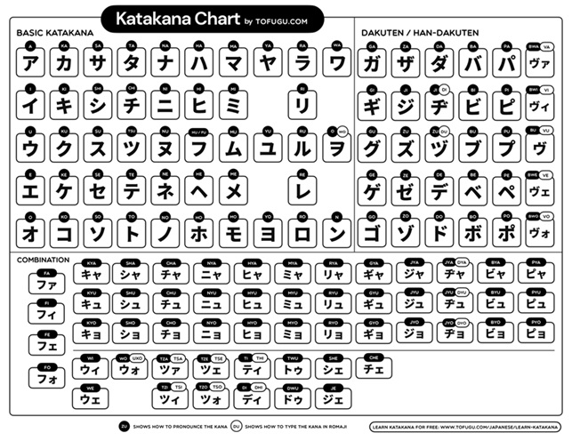

Katakana - カタカナ
Depois de aprender Hiragana, temos que fazer tudo outra vez e aprender Katakana.
Tabela de Katakana - カタカナ表
Na seguinte tabela podemos ver os 46 Katakana base e as suas variações existentes no japonês contemporâneo. Deixo, mais uma vez, a ligação para um vídeo no YouTube com a escrita e pronúncia de cada Katakana.

Ao contrário do hiragana, que lida com vogais longas adicionando mais vogais às coisas, o katakana tem um carácter especial de extensor de vogais. ー
Quando vires isto, só precisas de prolongar a vogal que vem depois.
Por exemplo:
チズ = chizu
チーズ = chiizu
カド = kado
カード = kaado
Por último, para compensar a ausência de sons das consoantes: v, f e w, foram criadas combinações com vogais de meia largura.
Por exemplo:
ファックス = fakkusu = fax
チェック = chekku = check
Mais uma vez, o Real Kana e o Anki podem ajudar a praticar o Katakana.